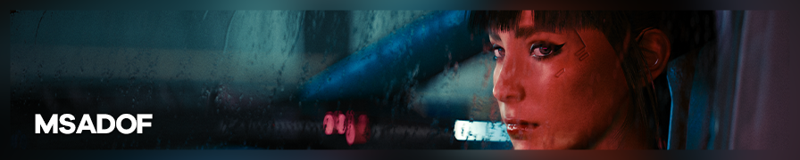
多重采样累积景深（MSADOF）是由 murchalloo 开发的 ReShade 高级景深插件。它在模糊处理过程中不使用深度缓冲，极大地拓展了虚化捕捉的可能性。本文是一份进阶指南，旨在涵盖 MSADOF 的使用方法及为您和其他用户提供的配置流程。
自本指南编写以来，Otis_inf 已开发出他自己的累积景深插件，其工作原理与 MSADOF 非常相似，且工作流程更加友好（即优势部分同样适用）。但与 MSADOF 不同，IGCSDOF 已面向公众发布。
您可以从这里获取，并了解其工作原理和使用方法。
MSADOF 需要 ReShade 5.4.2+ 并启用完整插件支持，以及受支持的 Otis_Inf 相机工具。2022 年 5 月 31 日之后的所有相机均应支持 MSADOF，请在每款游戏的"版本与兼容性"表格中查看"支持 IGCS Connector"。
{kind=link}
MSADOF Beta 0.9.2 目前处于封闭测试阶段，暂不对公众开放下载。
优势
MSADOF 通过在空间中某个平面附近操控游戏相机，并逐步混合结果，产生深度精确的虚化图像。这带来了：
精确的近平面渗出效果。
景深中的半透明头发！
景深中的粒子与透明效果。
深度精确的反射效果。
透明与半透明材质的分层虚化。
安装与初始配置
MSADOF_Beta_0.9.2.rar 包含一个文件和两个文件夹：
MSADOF.addon是插件本体。reshade-shaders是包含插件运行所需 ReShade 着色器的文件夹。MSADOF是包含 MSADOF 默认附加资源的文件夹。
标准安装：
- 将所有文件合并到 ReShade DLL 所在文件夹。
- 启动游戏。
自定义安装：
- 将
MSADOF.addon合并到 ReShade DLL 所在文件夹。 - 将
MSADOF.fx和MSADOF.fxh（均位于reshade-shaders中）合并到您的自定义 ReShade 安装目录。 MSADOF文件夹可放置在任何方便的位置，安装也完全是可选的，因为插件可以配置为查找/使用系统上的任意其他文件夹。
安装完成后，打开 ReShade 界面时将出现一个新窗口，这里是控制 MSADOF 主要功能的地方。您还需要在着色器列表中启用 MSADOF_ADDON [MSADOF.fx]，并将其拖到列表最底部。插件的完整功能需要访问深度缓冲。该插件还应出现在 ReShade 界面的 Add-ons 选项卡下。
为使插件正常工作，通常需要在游戏中启用垂直同步或将帧率上限设置为约 30 帧，以确保稳定的帧间距从而获得清晰的结果。同时应禁用运动模糊。
在《巫师 3：狂猎》中，MSADOF.addon 必须重命名为 IgcsConnector.addon 才能正常工作。目前这是已知的唯一特殊情况。
预配置参数列表
由于从头配置 MSADOF 可能较为复杂，这里整理了已测试游戏的已知 MSADOF 参数。在界面打开的情况下，从 Photography Mode 选项卡切换到 Tweaking Mode 选项卡，向下滚动并展开 Game Adjustments 来添加这些参数。您可能还需要修改 DOF Settings 中的某些值。
查看列表
跳过帧数（Frames to skip） 参数取决于您的硬件配置和游戏当前的性能表现。如果发现图像不够清晰或出现可见的环形图案，请调整该值。
| 游戏 | 近平面 | FOV | 可变近平面 | 相机倍数 | 备注 | |
|---|---|---|---|---|---|---|
| A Plague Tale: Requiem | 0.0490 | 180 | 0.001 | 近平面值仅在摄影模式下可靠生效。 | ||
| Ace Combat 7: Skies Unknown | 1.0000 | 180 | ✔ | 0.100 | ||
| Aliens: Fireteam Elite | 9.9965 | 180 | ✔ | 0.100 | ||
| Assassin's Creed Odyssey | 0.0995 | 180 | 0.001 | |||
| Atomic Heart | 2.0000 | 180 | ✔ | 0.100 | ||
| Assassin's Creed Origins | 0.0995 | 180 | 0.001 | |||
| Assassin's Creed Valhalla | 0.0995 | 180 | 0.001 | TAA 只能通过 HxD 禁用。 | ||
| Batman: Arkham Knight | 9.9965 | 180 | ✔ | 0.100 | ||
| Beyond a Steel Sky | 9.9965 | 180 | ✔ | 0.100 | ||
| Borderlands 3 | 9.9965 | 180 | ✔ | 0.100 | ||
| Blind Fate: Edo no Yami | 9.9965 | 180 | ✔ | 0.100 | ||
| Century: Age of Ashes | 5.625 | 180 | 0.1 | |||
| Chernobylite | 1.0000 | 180 | ✔ | 0.100 | ||
| CHORVS | 56.500 | 180 | ✔ | 0.100 | ||
| Close to the Sun | 1.0000 | 180 | ✔ | 0.001 | ||
| Code Vein | 9.9965 | 180 | ✔ | 0.100 | ||
| CRISIS CORE –FINAL FANTASY VII– REUNION | 按章节查看参数序章过场动画：10序章游戏玩法：0.65248 第 1 章过场动画：27.95 第 2 章过场动画：16.9 第 2 章游戏玩法：0.562970 第 3 章城市过场动画：22.7 第 3 章魔晶炉：84.5 / 16.76 |
按章节查看参数序章过场动画：130序章游戏玩法：180 |
✔ | 0.100 | 近平面值（及 FOV 值）在章节之间以及游戏玩法和过场动画之间会发生变化，请相应调整。此外，第 2 章在热采样时更容易崩溃。 | |
| Cyberpunk 2077 | 0.0200 | 180 | 0.001 | 可能需要开启光线追踪，或在垂直同步目标下保持较低帧率。 | ||
| Days Gone | 9.9500 | 320 | 0.100 | 将 AA 设置为 0 会导致 HUD 和控制台无法访问。 | ||
| Dead Island 2 | 9.9950 | 180 | ✔ | 0.100 | ||
| Dead Space Remake | 0.055168 | 180 | 0.001 | 跳帧数可能略有不同，但通常为 1-3。 | ||
| Death Stranding: Director's Cut | 0.1123 | 180 | 0.001 | 在摄影模式中渲染后游戏会崩溃，过场动画中近平面会持续变化，建议开启 30fps 上限。 | ||
| Draugen | 9.9965 | 180 | ✔ | 0.100 | ||
| ECHO | 0.5600 | 180 | 0.100 | 不支持自定义宽高比。 | ||
| Elden Ring | 0.0500 | 180 | 0.001 | 相机倍数可能因区域而异。游戏内抗锯齿可能导致结果模糊。 | ||
| Final Fantasy VII Remake Intergrade | 5.6250 | 180 | 0.100 | |||
| Harvestella | 9.9965 | 180 | ✔ | 0.1-1 | ||
| Hellblade: Senua's Sacrifice | 9.9965 | 180 | ✔ | 0.100 | ||
| Hogwarts Legacy | 9.9950 | 180 | ✔ | 0.101 | 建议关闭垂直同步。 | |
| Kena: Bridge of Spirits | 9.9965 | 180 | ✔ | 0.100 | 近平面值仅在摄影模式下可靠生效。 | |
| Life is Strange: True Colors | 9.9965 | 180 | ✔ | 0.100 | ||
| Marvel's Spider-Man Remastered | 0.0775 | 140 | ✔ | 0.001 | ||
| Mortal Shell | 9.9965 | 180 | ✔ | 0.100 | ||
| MotoGP 19 | 9.9965 | 180 | ✔ | 0.100 | ||
| Observer: System Redux | 9.9965 | 180 | ✔ | 0.100 | ||
| Omno | 9.9965 | 180 | ✔ | 0.100 | ||
| OverDrift Festival | 5.624 | 180 | ✔ | 0.100 | ||
| Resident Evil 2 (DX12) | 0.0100 | 180 | ✔ | 0.001 | ||
| Resident Evil 3 (DX12) | 0.0100 | 180 | ✔ | 0.001 | ||
| Resident Evil 4 | 0.0100 | 180 | ✔ | 0.001 | ||
| Returnal | 9.9950 | 180 | ✔ | 0.100 | 在 16:9 下可正常工作，不同宽高比需要不同的跳帧数。 | |
| SCARLET NEXUS | 9.9965 | 180 | ✔ | 0.100 | ||
| Scorn | 3.0000 | 180 | ✔ | 0.010 | ||
| Sifu | 9.9965 | 180 | ✔ | 0.100 | ||
| Space Hulk: Deathwing | 5.0 | 180 | 0.100 | 可能需要根据情况调整 FramesToSkip 值。经测试，设为 1 通常有效，但有时需要设为 0 才能消除模糊的甜甜圈状伪影。 | ||
| Spirit of the North | 9.9965 | 180 | ✔ | 0.100 | ||
| Star Wars Jedi: Fallen Order | 9.9995 | 180 | 0.100 | |||
| Stray | 0.5625 | 180 | 0.100 | |||
| Tales of Arise | 9.9965 | 180 | ✔ | 0.100 | ||
| Tell Me Why | 9.9965 | 180 | ✔ | 0.100 | ||
| The Ascent | 9.9965 | 180 | ✔ | 0.100 | ||
| The Last of Us Part I | 0.135000 | 180 | 0.001 | 在过场动画和摄影模式中，建议使用 0.121500 作为近平面值。同时确保禁用 TAA。 | ||
| The Medium | 2.0000 | 180 | ✔ | 0.100 | ||
| The Outer Worlds | 1.2700 | 180 | 0.100 | |||
| The Pathless | 9.9965 | 180 | ✔ | 0.100 | ||
| The Shore | 9.9965 | 180 | ✔ | 0.100 | ||
| The Sojourn | 9.9965 | 180 | ✔ | 0.100 | ||
| The Witcher 3: Wild Hunt | 0.2000 | 180 | 0.001 | 过场动画中近平面值可能切换为 0.4。 | ||
| Twin Mirror | 9.9965 | 180 | ✔ | 0.100 | ||
| Uncharted 4 | 按章节查看参数第 1 章：0.2385第 2 章：0.2400 第 3 章：0.1000 第 4 章：0.2400 第 5 章：0.2400 第 6 章：0.2400 第 7 章：0.2400 第 15 章：0.2400 第 16 章：0.2400 第 17 章：0.27-0.29 第 18 章：0.235-0.24 第 20 章：0.235-0.24 第 22 章：0.20 尾声：0.20 |
180 | ✔ | 0.100 | 近平面值在章节之间会发生变化（有时在同一章节内也会变化），请相应调整。此外，使用不同宽高比时该值可能改变。如果更改宽高比后结果模糊，请取消勾选并重新勾选可变近平面复选框，然后重新对焦。如果仍无效，则需要手动调整近平面值本身。 | |
| Vampire: The Masquerade - Swansong | 1.0000 | 180 | ✔ | 0.100 | ||
| Visage | 9.9965 | 180 | ✔ | 0.100 | ||
| Way of the Hunter | 1.0000 | 180 | ✔ | 0.100 |
有想要添加的游戏调整参数？前往 issue 页面提交，或联系管理员。
如果需要为新游戏进行配置与调整，请参考下方的高级配置部分。
使用方法
插件共有四个选项卡。Photography Mode 和 Tweaking Mode 是您最常使用的两个。Photography Mode 提供简洁的界面，用于在配置完成后控制所有必要参数；Tweaking Mode 则是更高级的配置与调整控件集合。Shape Settings 和 Settings 是用于设置焦外散景形状和插件整体配置的附加选项卡。
看不到全部四个选项卡？需要先注入相机工具！
配置完成并激活自由相机后，按 Ctrl+B 开始渲染。最终图像将自动保存到游戏 EXE 所在文件夹，也可在 Settings 选项卡中设置自定义保存路径。
插件同样支持热采样！只需在热采样后开始渲染即可。
摄影模式
这是以简化方式控制插件的选项卡，控件类似于真实相机。在 Tweaking Mode 中设置的值将覆盖此模式中的值。
相机/镜头设置
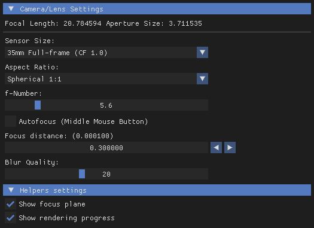
焦距
插件将从相机工具接收的 FOV 转换为等效 35mm 焦距，便于近似估算现实焦距。
此值并不精确！
相机工具（以及由此延伸的 MSADOF）并不了解游戏世界与现实生活的比例关系。游戏引擎也很少明确其主要 FOV 分量是水平、垂直还是对角线的。这意味着尽管 MSADOF 基于物理原理，但它无法精确再现现实世界的数值，用于现实模拟并不可靠。
光圈大小
显示焦外散景的尺寸，对应 Tweaking Mode 中的 形状大小（Shape size）。
传感器尺寸
这是供插件模拟的传感器尺寸下拉列表，作为光圈大小的"倍数"。选择裁切系数（CF 值）更高的较小传感器会使散景圆圈变小，反之亦然。
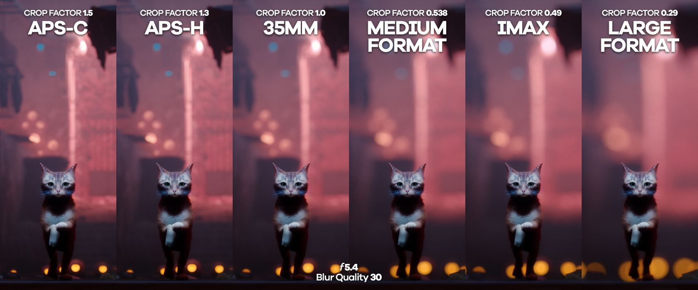
宽高比
常见电影宽高比的下拉列表，影响散景圆圈的形状。便于快速在球形散景和变形椭圆散景之间切换。
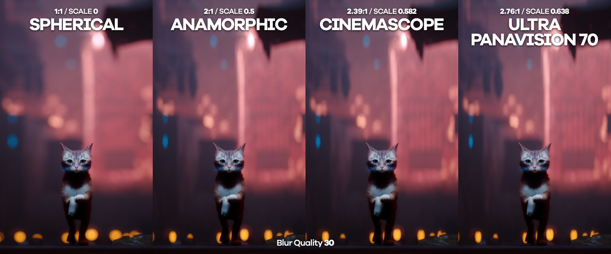
f 值
设置光圈大小。f 值越小，散景越大。
自动对焦（鼠标中键）
按住鼠标中键时设置自动对焦点，只要 ReShade 界面保持开启，插件将持续对焦于该点。
对焦距离
设置焦平面，允许手动对焦。右侧的箭头可调整滑块的步长。
模糊质量
设置插件的采样数量，对渲染时间影响显著。如果发现欠采样（每个点清晰可见），请增大该值；如果渲染时间过长，请减小该值。对应 Tweaking Mode 中的 环数（Number of rings）。
辅助工具设置
显示焦平面
在屏幕上叠加一个平面，平面与场景的交叉位置即为当前焦距所在处。
显示渲染进度
显示进度条。
调试模式
这是以高级方式控制插件的选项卡。
景深设置
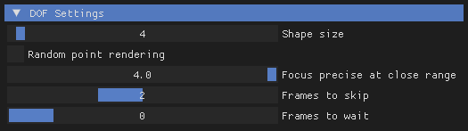
形状大小
控制散景的大小。
随机点渲染
将采样路径从渐进螺旋式改为随机采样，可用于预览最终散景大小，或用于减少动态背景元素对渲染的干扰。
此功能目前未按预期工作，偶尔会在焦平面产生鬼影。
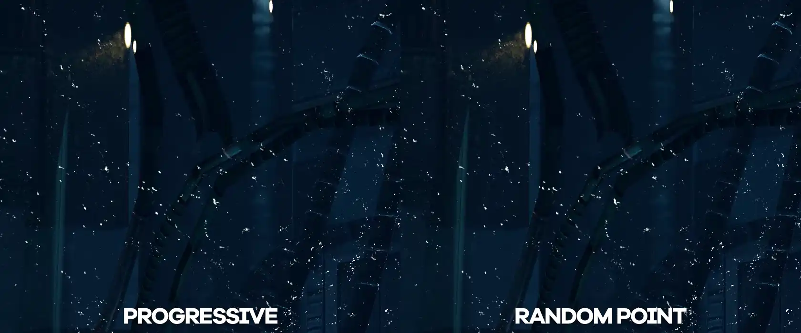
此示例已加速 8 倍。
近距离精确对焦
改变对焦距离滑块的缩放方式。值越高，滑块在靠近相机处的步进越小，适用于需要高精度对焦的人像拍摄。
跳帧数
每隔若干帧跳过相机移动，以使累积更加稳定。根据游戏性能，可能需要调整此值。如果发现插件在焦平面上绘制出环形/甜甜圈状图案，通常需要修改此值。
等待帧数
与上述类似，仅在发现焦平面不够清晰时才需要修改此值。
游戏调整
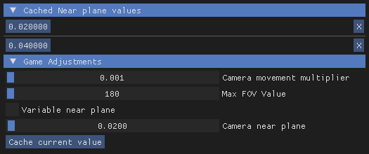
此类别通常无需手动配置，主要用于首次为新游戏进行配置。请参阅下方部分了解调整方法。
相机移动倍数
根据应用于相机坐标比例的倍数设置相机移动速度。增大以放大形状尺寸，减小以缩小形状尺寸。
最大 FOV 值
MSADOF 用于计算的最大 FOV 值。
可变近平面
当宽高比变化导致相机近平面也随之变化时，改变相机近平面的计算方式。
相机近平面
偏移近平面与游戏内相机的距离，主要用于将焦平面对齐到已知的对焦距离。
缓存当前值
将当前近平面值写入 MSADOF_CACHE.ini，并在该类别正上方的新列表中显示缓存的值。对于近平面值会变化的游戏（如《巫师 3》）非常有用。
未使用的设置
此类别无需调整。
翻转 X / Y
根据相机移动轴修正散景形状。翻转 X 且不翻转 Y 的默认设置似乎适用于所有游戏。
形状设置
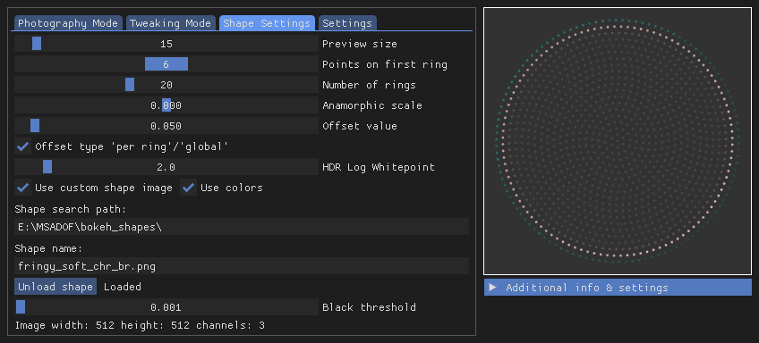
此选项卡用于配置散景圆圈的形状，右侧可预览形状效果。
预览大小
仅在旁边的预览窗口中改变每个点的比例。
第一环上的点数
设置每个环上点的密度，影响渲染时间。
环数
改变每个散景圆圈的环数，影响渲染时间。如果发现欠采样（每个点清晰可见），请增大；如果渲染时间过长，请减小。
变形比例
拉伸/压缩散景圆圈，用于复制变形镜头特有的椭圆散景效果。
偏移值 / 偏移类型
影响每个点相对于前一环的对齐方式。如果散景中出现明显规律性图案，请调整此项。
HDR 对数白点
影响累积过程中亮像素的叠加方式。默认值 2.0 提供最自然的高光效果。
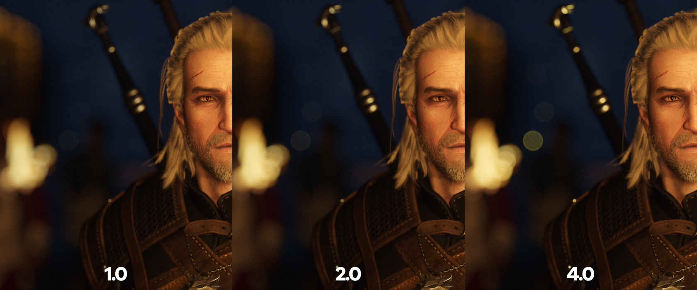
使用自定义形状图像
勾选后，MSADOF 可采样驱动边缘光晕和散景形状的自定义图像，从而模拟多叶片光圈或其他更有创意的效果。
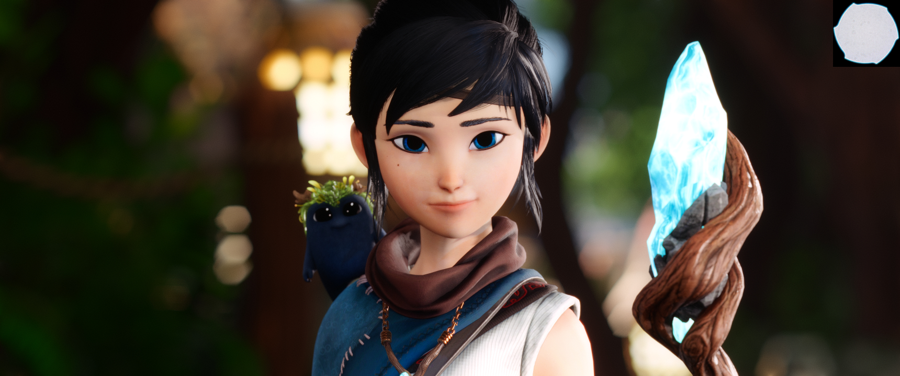
六叶片光圈形状输入。
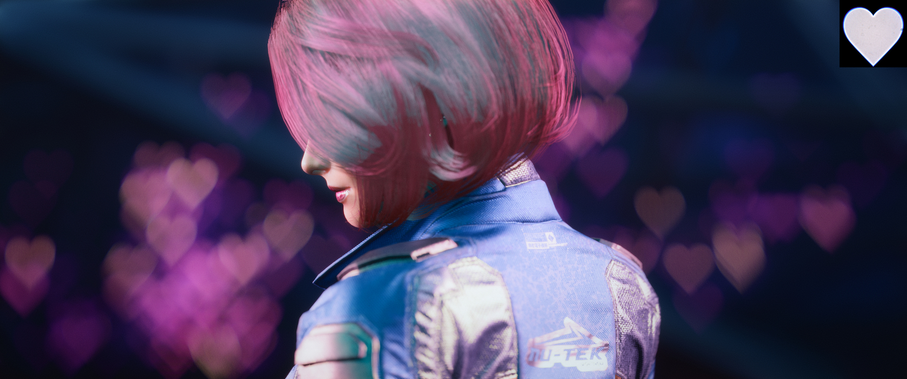
自定义心形输入。
通常需要更高的环数才能准确采样精细形状。右侧的形状预览有助于判断形状是否足够精细。
由于插件的工作原理，近平面中的形状散景将呈倒置状态。
使用颜色
勾选后，渲染将采样散景形状的输入颜色，可用于为散景引入色差光晕，或在特定输入下产生独特的深度分离效果。
可能不太明显，但散景圆圈现在带有淡淡的蓝色光晕。
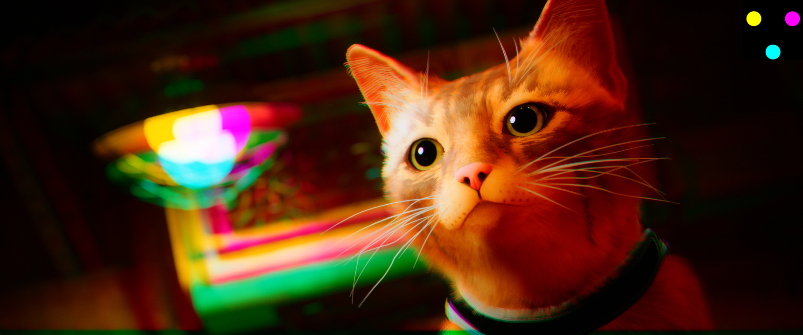
这里使用了青-品-黄三色"三重光圈"输入，创造出了……不知道该叫什么的效果。
形状搜索路径
MSADOF 查找图像的文件夹路径。
形状名称
MSADOF 加载为自定义形状的图像文件名称，文件格式必须为 PNG、JPG 或 BMP。
加载形状
必须按此按钮将图像加载到 MSADOF 中，右侧预览窗口将相应更新。
黑色阈值
MSADOF 将采样的最暗像素的亮度值。比此值更暗的像素将在渲染中被跳过以节省渲染时间。
更多散景形状
标准 MSADOF 下载已附带若干自定义形状供您尝试，这里还有一份由 moyevka 精选的额外形状合集供您玩味！
趣味形状！
bokeh_shapes\Fun 文件夹包含一些创意形状，如上图所示的带光晕心形，以及星形等常见"散景套件"形状。还包含一些着色多重光圈，可用于重现立体眼镜风格的图像。
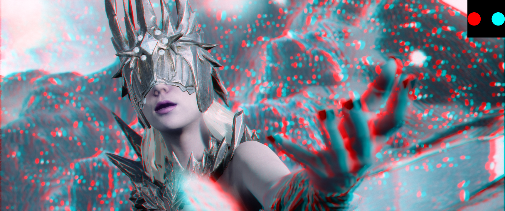
献给那位还拥有一副赛璐玢 3D 眼镜的朋友。
镜头采样
bokeh_shapes\Lens Samples 文件夹是一组从真实镜头在不同焦距和光圈下采样的输入，精心汇编了逼真的多叶片光圈形状和散景光晕资源库。
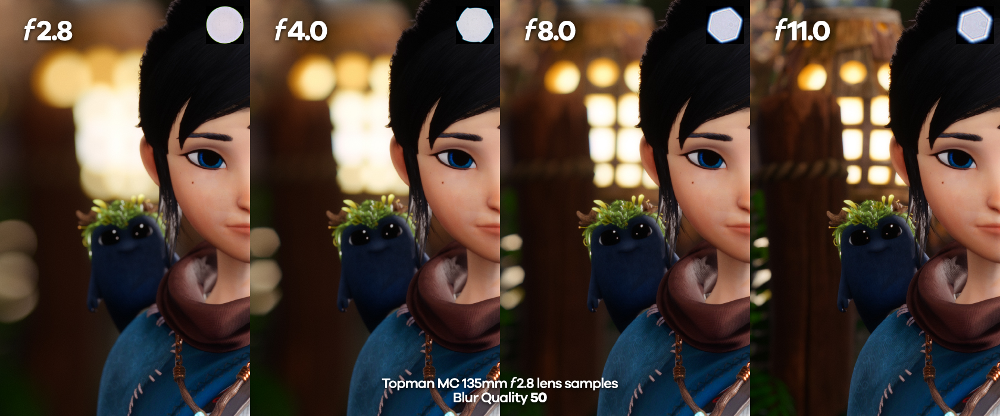
散景测量数据来自 MattGunn2010 在 Flickr 上的相册，源自 PentaxForums。相关数据集已经过编辑，以确保与 MSADOF 完全兼容。
制作自定义形状
MSADOF 接受任意正方形图像作为自定义形状输入，但图案必须适配正方形内切圆的范围。
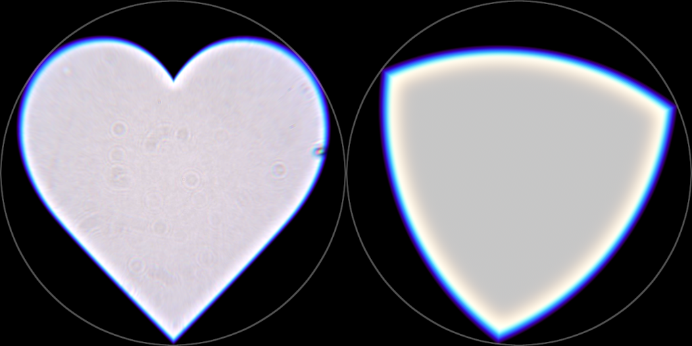
这些心形和勒洛三角形输入相对于其边界正方形看起来可能有些偏离中心，但圆形叠加图显示它们完全适配 MSADOF 在自定义图像采样时所考虑的圆形边界范围。
附加信息
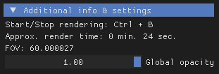
此类别显示杂项信息。
FOV
通过相机工具获取的视野值。
全局不透明度
控制所有 ReShade 窗口的全局不透明度（覆盖 ReShade 设置选项卡中的全局透明度）。
此值不会写入 ReShade.ini，重载 ReShade 后将恢复初始全局透明度值。
设置
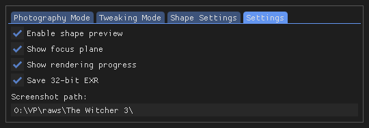
这是可进一步配置插件的选项卡。
启用形状预览
切换右侧的形状预览窗口。
显示焦平面
在屏幕上叠加一个平面，平面与场景的交叉位置即为当前焦距所在处。
显示渲染进度
显示进度条。
保存 32 位 EXR
由于累积过程可能引入色带，此选项将累积的帧堆叠到更高精度的缓冲区中。该缓冲区保存为高位深（32 位）EXR，能存储比标准 BMP 多 65536 倍的颜色数据。这将产生更平滑的渐变且无色带，并在后期调色时提供更丰富的颜色数据。保存的 EXR 需要进一步后期处理才能产生预期效果。
来自《Stray》的一张调色截图，左半部分的色带清晰可见。
截图路径
可在此粘贴自定义截图保存路径。路径末尾必须以 \ 结尾。
着色器设置
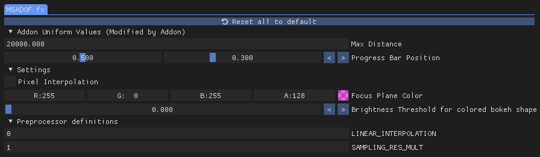
MSADOF_ADDON [MSADOF.fx] 包含影响累积过程的附加控件以及一些基本的便捷功能。
最大距离
插件使用的最大距离，无需调整。
进度条位置
调整启用显示渲染进度时进度条的位置，例如在热采样窗口中监控渲染进度时很有用。
像素插值
将累积插值类型切换为像素模式，影响散景中采样点的外观，尤其是在较低模糊质量下。
焦平面颜色
调整启用显示焦平面时焦平面的颜色和不透明度。
彩色散景形状的亮度阈值
设置从彩色散景形状采样的最亮像素的阈值，影响累积散景的亮度。
LINEAR_INTERPOLATION
将累积插值类型切换为线性模式，影响散景中采样点的外观，尤其是在较低模糊质量下。
SAMPLING_RES_MULT
设置一个倍数，从相机移动累积的数据中构建更高分辨率的图像，影响文件保存时间。
此功能目前处于实验阶段，不一定能提升图像质量。
为新游戏进行配置
如果您正在玩一款尚无已知参数的游戏，或已知参数在您这端产生错误结果，以下是配置 游戏调整（Game Adjustments） 选项卡的流程。
1. 最大 FOV 值
将游戏设置为 1:1 宽高比运行。展开 附加信息（Additional info），注意观察 FOV 值。激活工具的自由相机后，持续缩小视角直到图像翻转。记录翻转发生时的 FOV 值——这就是 Max FOV Value。
此值通常为 180，除非发现异常，否则无需调整。
2. 校准焦平面
此步骤需要大量反复试验，需调整 对焦距离（Focus distance） 直到找到焦平面。建议使用较大的模糊量（大 形状大小（Shape size） / 相机移动倍率（Camera movement multiplier））来帮助精确定位焦点。
如果难以找到对焦区域且结果持续模糊，可能需要配置 跳过帧数（Frames to skip）。插件绘制环形/甜甜圈通常是这一问题的典型标志。
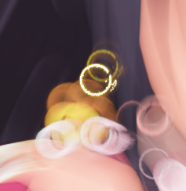
一旦找到焦平面，在勾选 显示焦平面（Show focus plane） 的情况下调整 Camera near plane，直到焦平面辅助平面与实际焦平面对齐。
运动模糊（以及某些 TAA 实现）可能干扰此步骤，导致无论如何结果都模糊。如果仍有困难，请确保将其禁用。
3. 可变近平面
如果更改宽高比后焦平面辅助平面不再与对焦距离对齐，则应勾选此复选框。
完成！
此过程相当于将焦平面辅助平面校准到实际焦平面，以便用于帮助您设置对焦点。
视频示例

未涵盖 Max FOV Value 或 Variable near plane。
技巧与提示
最佳情况
要从该插件获得最佳效果，最好找一款能够完美暂停时间、没有明显抖动、植被摇摆或其他可能干扰渲染因素的游戏。
光线追踪/高光噪点通常是散景圆圈出现"脏乱"效果的原因。
预览散景大小
您可以通过使用很低的 环数（Number of rings） 或较低分辨率进行渲染来快速预览散景形状的大小。随机点渲染对此也非常有用。
抗锯齿与图像清晰度
该着色器基于相机的工作原理意味着它自带抗锯齿！可以在游戏中完全禁用 AA 以获得更清晰的图像。这对于具有时间依赖性着色器的游戏（如《赛博朋克 2077》的头发着色）同样效果出色，因为 MSADOF 从技术上讲本身也是一种时间性技术。
不建议在渲染前进行锐化处理。锐化晕圈可能在累积过程中被放大和/或出现。
享受着色器的乐趣！
该插件与 ReShade 着色器也能完美配合！事实上，在渲染前使用 LUT 并将结果保存为 EXR 格式，得益于叠加过程可以减少色带。镜头畸变效果（如出色的 PerfectPerspective.fx）也可以被捕捉到。
处理保存的 EXR 文件
保存的 EXR 文件采用线性伽马（伽马 1.0），在图像查看器中打开时会显得"过曝"。大多数图像查看器和转换器在将其压缩为 8/16 位格式时（如在 Photoshop 中打开后直接保存为 PNG），会自动为您进行伽马校正，从而产生色彩正确的图像。
如果您想编辑这些 32 位颜色，对 0.454545...（循环小数）进行简单的伽马校正可将图像还原至伽马 2.2，这与原始颜色非常接近。例如，可以在 Photoshop 中通过 图像 > 调整 > 曝光度... 或使用曝光度调整图层来完成。
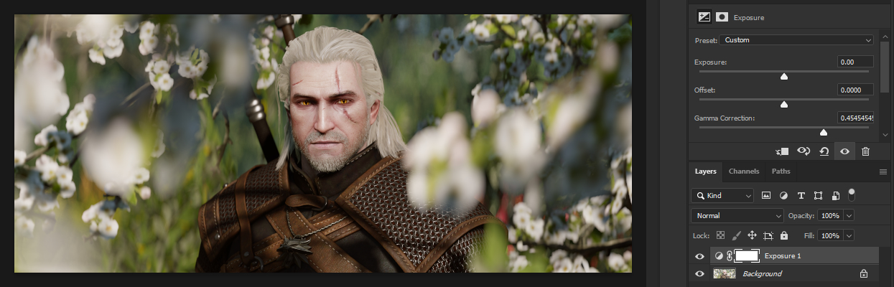
一些高级编辑器（如 Nuke）有视口显示伽马滑块可替代使用。
然后可以在此校正图层之上进行编辑。记得在导出最终结果前禁用该图层，以防图像过暗。
技术细节：这并不是真正精确的流程。除以 0.454545... 只是近似 sRGB 伽马曲线，该曲线比伽马 2.2 稍微复杂一些。如果您真的需要精确转换回 sRGB，则需要应用从线性到 sRGB 的色彩空间变换。处理色彩空间的高级编辑器会有相应功能集。也可以为图像指定一个配置文件，使其始终被解析为 sRGB 图像。但总体而言，除非您确实需要原始的真实色彩，否则我不会花这些功夫，而是直接在这个基础伽马数学之上进行调色工作。
这是基于我对色彩空间这一复杂领域的粗略理解 :) 如果您认为全都是错的，我很乐意接受指正。
最后更新于 2022 年 10 月 29 日
图像提供及撰写：moyevka